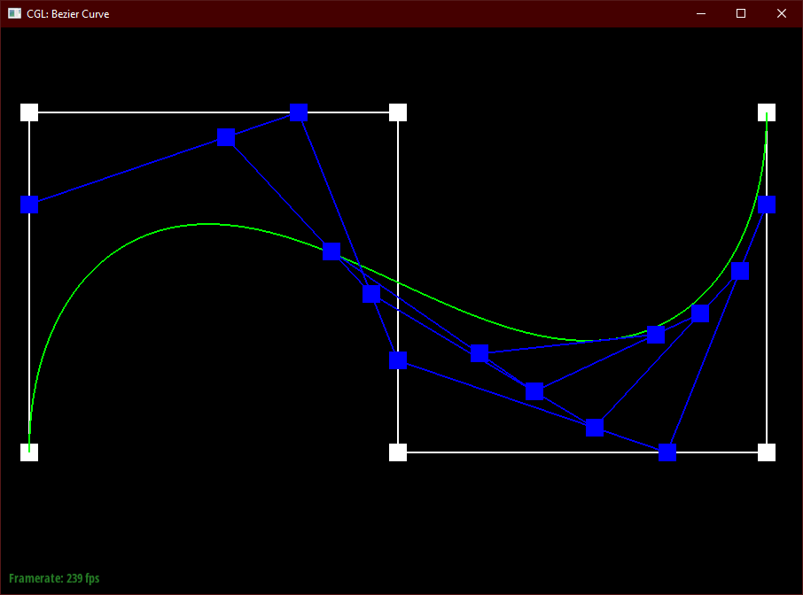

Overview
In this project, I built a program that is capable of reading a set of points corresponding to a Bezier curve or Bezier surface and calculating the shape of that curve or surface so that it may be drawn on the screen. It is also capable of doing the necessary calculations to smoothly shade those Bezier surfaces as well as perform relevant elementary operations on the geometry primarily with the purpose of being able to upsample a given mesh. In doing so, I have learned the importance of ensuring a complete understanding of exactly how one wishes for their program to function, as even the slightest misunderstanding has the potential to turn in to hours of unnecessary debugging. I have also learned that even what one might be tempted to consider the "easy" parts of dealing with 3D geometry such as the visually simple math and operations we have implemented here (in comparison to the traditionally "difficult" parts such as ray tracing an environment) should still not be taken lightly.
Section I: Bezier Curves and Surfaces
Part 1: Bezier Curves with 1D de Casteljau Subdivision
Briefly explain de Casteljau's algorithm and how you implemented it in order to evaluate Bezier curves.
The de Casteljau algorithm very simply works by using a t parameter as a weight for the points of a Bezier curve to
narrow down a set of points defining a Bezier curve one point at a time. Each intermediate set of points defines a
different Bezier curve where the location of the point t along the curve remains equivalent among all. Eventually,
only one point remains: the point defined by the paramter t along the original curve. As such, it can be used to
calculate the shape of a Bezier curve based on a given set of points.
I implemented this algorithm to evaluate Bezier curves by looping through the input 2D vector of points and using a t
value to calculate the "lerp" between each set of neighboring points. This leaves us with a new 2D vector defining an
intermediate curve that has been subdivided once more than the original input, and so has a size of one less than the
original set. This implementation only performs one subdivision step of the algorithm at a time, so the handling of what
t value is used and the calling of our function the proper number of times to collect all of the necessary information
to draw the complete curve (and visualize the subdivisions) is handled elsewhere.
Show screenshots of each step / level of the evaluation from the original control points down to the final evaluated point. Press E to step through. Toggle C to show the completed Bezier curve as well.

|
|
|
|
|
|

|
|
Show a screenshot of a slightly different Bezier curve by moving the original control points around and modifying the parameter \(t\) via mouse scrolling.
Part 2: Bezier Surfaces with Separable 1D de Casteljau
Briefly explain how de Casteljau algorithm extends to Bezier surfaces and how you implemented it in order to evaluate Bezier surfaces.
With a Bezier surface, the main difference from a Bezier curve is obviously that we have added an extra dimension. As such, we use two inputs, u and v, to describe
the location of a point on the surface rather than just the singular t value. Our control points are also 3D now instead of 2D,
but this on its own doesn't change the math at all. What does change is that the algorithm now must do two different "evaluations",
one for each dimension. First, evaluate the point corresponding to the u parameter for every row of points defining the surface. This leaves
us with a new set of points that can be treated as its own Bezier curve, which we then apply our second evaluation to with the remaining v parameter, leaving
us with the point on the Bezier surface that corresponds to u, v.
To implement this extension of the algorithm, we first must create a new version of our "evaluateStep" function from task 1 that works with sets of 3-dimensional
points rather than just two dimensions. The math does not change at all for this, it simply uses Vector3D inputs and output rather than Vector2D.
This time, unlike in task 1, the calling of our "evaluateStep" function is not handled for us, so we must implement it ourselves. Firstly, we
define a function "evaluate1D" that simply takes an input set of points and repeatedly runs "evaluateStep" on them until a singular point remains
(so it calculates the exact point t on the Bezier curve defined by the input set of points, rather than just performing one step at a time).
Once we have this 1-dimensional case solved, we can create our final "evaluate" function that calculates any point u, v along the Bezier surface by passing
each row of control points to "evaluate1D" with the parameter u, and then passing all of the resulting output points to "evaluate1D" again with the parameter v.
This creates our final desired function that takes a set of control points defining a Bezier surface and parameters u and v and outputs the exact point
along the Bezier surface that corresponds to those u and v values.
Show a screenshot of bez/teapot.bez (not .dae) evaluated by your implementation.

Section II: Triangle Meshes and Half-Edge Data Structure
Part 3: Area-Weighted Vertex Normals
Briefly explain how you implemented the area-weighted vertex normals.
To implement area-weighted vertex normals, we know that we need to calculate the normal and area of each face that has the given
vertex as one of its vertices. To do so, we can simply start at whatever half edge is associated with the vertex and use it to loop
through all half edges that have the given vertex as their vertex by iterating through "h = h->twin->next" (because going from one half edge
to its twin and then the next half edge in that one's sequence brings you to the next half edge for that vertex). At each iteration,
we find the relevant point positions B and C using similar half edge expressions ("B = h->next->vertex" and "C = h->next->next->vertex")
corresponding to the other two points for a given face that help define the complete face when combined with our existing vertex A's position.
Now that we can iterate through each set of points A, B, and C defining each face incident to our original vertex A, we are capable of calculating
both the normal and area of each face. The normal is simply the cross product of the vector (B - A) and the vector (C - A). The area of
the face is simply the norm of that cross product divided by 2. We can then add the normals together each weighted by their face's respective
area and scale the result to a unit vector to get our final approximate unit normal for the vertex.
Show screenshots of dae/teapot.dae (not .bez) comparing teapot shading with and without vertex normals. Use Q to toggle default flat shading and Phong shading.
|
|
|
Part 4: Edge Flip
Briefly explain how you implemented the edge flip operation and describe any interesting implementation / debugging tricks you have used.Contrary to the assignment's suggestions, I implemented the edge flip operation not by simply updating EVERYTHING that was even remotely related to the edge in question and instead by thinking my way through what components could potentially require changes and only updating those. Doing so ultimately did not end up costing me on this particular part of the project. To implement the edge flip operation, I simply made a list of all the geometry that would be affected by the edge flip by inspecting the diagram and manually overwrote the pointers for each one:

The last two points are sometimes unnecessary if the vertex/face happened to be pointing to a half edge that is still respectively relevant, but because they could potentially point to a half edge that no longer relevant to them, we need to always update them just in case.
Show screenshots of the teapot before and after some edge flips.
|
|
|
Write about your eventful debugging journey, if you have experienced one.
My debugging journey was not terribly bad for this particular part. My logic was sound from the start, but in implementation, I accidentally assumed that the half edge loops were clockwise instead of counter clockwise. This obviously led to odd unexpected behaviors that I initially thought were the result of my having missed some pointers that were necessary to reassign. Thankfully, I quickly figured out my error when I looked up a more detailed diagram to ensure that I hadn't missed anything, and it all worked as intended once I rewrote it for the proper counter clockwise loops.
Part 5: Edge Split
Briefly explain how you implemented the edge split operation and describe any interesting implementation / debugging tricks you have used.
To implement the edge split operation, I employed the same strategy that I did for the edge flip operation where I simply attempted
to reason out which pointers would need to be reassigned and manually reassigned each one rather than following the recommendation of
simply reassigning everything that could even remotely potentially be affected.
To do so, I again made a list of all the geometry that would be affected by the edge split by
inspecting the diagram and manually overwrote the pointers for each one. The biggest difference is that this time, new geometry needed
to be added rather than simply reusing the existing geometry. One new vertex needs to be created along the split, three new edges
need to be created for ma, mb, and md (I reused the existing edge for mc), six new half edges need to be created for those three new
edges, and two new faces need to be created as we went from 2 to 4 in the diagram.

Once we create all of this new geometry, I found it simplest to first ensure that each new piece was set up correctly first prior to fixing
the old geometry. To do so, firstly we must calculate the position of our new vertex m as a simple "lerp" between the two vertices c and b. Then,
we ensure that each new piece of geometry has a pointer to a half edge that will be relevant to that piece of geometry once the operation is
complete. We can also now assign the relevant information for each of the 6 new half edges am, ma, bm, mb, dm, and md.
(NOTE: For my implementation, I decided to
reuse the old half edges of cb as the half edges cm and mc and I also decided to reuse the left face as the top left face and the right face as
the bottom right face. You could also potentially reuse the half edges as cm and bm instead, and reuse the faces in any number of different ways,
but doing so would require you to alter different pointers differently than how I have described.)
Once all of that is complete, we can again manually fix all of the existing geometry that will be affected by this operation:
Again, the last two points are sometimes unnecessary if the vertex/face happened to be pointing to a half edge that is still respectively relevant, but because they could potentially point to a half edge that no longer relevant to them, we need to always update them just in case.
Show screenshots of a mesh before and after some edge splits.
|
|
|
Show screenshots of a mesh before and after a combination of both edge splits and edge flips.
|
|
|
Write about your eventful debugging journey, if you have experienced one.
This time around, my debugging journey was unfortunate. Again, my logic was sound from the start, but in implementation I made
two mistakes that would consume a massive chunk of effort. The first bug caused my program to simply freeze when I attempted the
edge split operation. I assumed that this had to be the result of some sort of infinite loop in my pointers, and was relatively
quickly able to find the culprit as being that I had just forgotten to employ one of my reassignment steps I listed out above.
Upon fixing that, my operation seemed to work perfectly! I could split edges to my hearts content! I was just about to move on before
I split one more edge and all of the sudden... one of the faces of the mesh disappeared. At first I thought it might have just been
that I had also flipped an edge at some point and stumbled into one of the degenerate cases mentioned earlier, but alas when I
restarted the program and started only randomly splitting edges, again one face disappeared. One.
I knew I was close, most of the time it was working perfectly fine! I assumed I had simply missed reassigning some pointer
again just as before. I triple checked all of my reassignments and triple checked that I wasn't forgetting anything that could
possibly have needed to be changed, and yet, I was still stumped.
I knew I could just employ the strategy that the spec suggested of reassigning EVERYTHING just to be safe, but I had made it this far
and decided to dig my heels in deeper. I painstakingly triple checked the entire function line by line while tweaking little things
here and there to see if it fixed the issue, but nothing was working.
After what felt like an eternity (and was probably actually more than two hours) of just staring at my code with no progress being made, I finally
noticed my mistake. A typo. One letter. Somewhere in the mess of the function, I had accidentally typed "br" (bottom-right) as the respective face instead of "bl" (bottom-left).
Upon correcting this mistake, everything worked as intended. I am unsure what strategies I could have potentially used to prevent this besides
simply following proper CS techniques in keeping the function small and writing tests instead of having this monstruous and untestable nightmare, but alas I did not.
Part 6: Loop Subdivision for Mesh Upsampling
Briefly explain how you implemented the loop subdivision and describe any interesting implementation / debugging tricks you have used.
After the mess that I endured with task 5, to implement loop subdivision, I decided to follow the recommended method as closely as possible this time around.
The first step described in the function comment was to compute all the "newPosition"s of each vertex in the mesh. To do so, I simply
looped through the vertices of the mesh and calculated the new position for each one. To calculate this new position in each iteration,
I simply grabbed the half edge associated with the vertex and used it to iterate through all of the half edges associated with the vertex (just like in task 3)
so that I could sum each neighboring vertex's position. At the same time, I kept track of how many neighboring vertices there were as the
variable n. Lastly, I calculated the value of u using the final value of n and now had all of the pieces necessary to calculate the newPosition
of the vertex : "newPosition = (1 - nu) * oldposition + (u * neighbor_sum)". When setting the newPosition variable, I also set the vertex's
variable "isNew" to false, as this this vertex is definitely one from the old mesh.
For the second step, I again simply followed the description to calculate the newPosition associated with the edge (what would become a new
vertex). This was very similar, except that I looped through all of the edges in the mesh instead of the vertices. It is then simple to
get the pointers to each of the relevant vertices A, B, C, and D and then plug all of those positions into the provided equation: "newPosition = 3/8 * (A + B) + 1/8 * (C + D)".
Again, I set isNew to false for all of these edges as they are definitely all in the old mesh for now.
For the third step, I again followed the description in needing to loop through every edge in the mesh. To ensure that we only split old edges
and avoid an infinite loop, I had to go back and modify my edge split function to mark the two newly created edges (not the two that are along
the edge that was split) as new. I originally tried to mark all four "split" edges as new and then check whether or not to split an edge with the condition "!edge->isNew", but
this led to a plethora of unforseen problems in the later parts, so I was eventually forced to use the vertices to check if an edge was new or not
and to only mark 2 of the 4 edges as new in the edge split function. As such, we then simply loop through the edges in the mesh and split an edge if
neither of its vertices are new. At the same time, we also copy the newPosition variable from the edge to the new vertex m that is returned.
For step four, we do something very similar to the previous step where we loop through all the edges and conditionally apply an operation, except instead of checking for if the edge is new, we check if the edge is new
and also if only one of the edge's vertices are new. If and only if one of the two vertices is new and the edge is new, then we flip that edge.
Finally for step five, we can very simply loop through all of the vertices in the mesh and set their positions to match what is stored in the newPosition variable.
We could also loop through everything to ensure that isNew is no longer set to true on any of the geometry, but this is unnecessary as we made sure to set them
all to false at the start of the function call.
With all of these steps correctly implemented, are now able to subdivide (upsample) our meshes.
Take some notes, as well as some screenshots, of your observations on how meshes behave after loop subdivision. What happens to sharp corners and edges? Can you reduce this effect by pre-splitting some edges?
Subdivision clearly works to smooth out any given mesh. Sharp edges and corners quickly become smoothly rounded after even just two or three subdivisions, but this effect does seem to be reduced by pre-splitting edges. I believe that this is because splitting edges adds more "original" vertices to your mesh. That way, when mesh subdivision is applied, a higher density of original information means that less interpolation occurs inbetween the points, and sharp corners and edges are not as strongly smoothed.
|
|
|
|
|
|
Load dae/cube.dae. Perform several iterations of loop subdivision on the cube. Notice that the cube becomes slightly asymmetric after repeated subdivisions. Can you pre-process the cube with edge flips and splits so that the cube subdivides symmetrically? Document these effects and explain why they occur. Also explain how your pre-processing helps alleviate the effects.
I believe that the cube becomes sort of lumpy and asymmetrical despite several subdivisions because the original cube's geometry was asymmetrical. Each face has two triangles split with a big diagonal edge. This edge must go from either right to left or left to right on each face, and as such the cube is asymmetrical. I believe that this translates into a lumpy asymmetrical subdivision because the subdivision algorithm is not simply based off of the positions of all the vertices, but also depends on the degree of each vertex and the sum of each vertex's neighbor vertices. With these diagonals across the cube, some of the 8 corners have a different degree than others and will also have a different sum of their neighbors positions, as some of the corners have no diagonal neighbors, some have one, some have two, and some even have all three possible diagonal neighbors.
However, it does seem that we can pre-process the cube with splits to make the subdivision symmetrical. By simply splitting each of the long diagonals, we make it so that every corner vertex has the same degree and the same relative sum of neighbor vertices when the subdivision algorithm occurs. That way, each original corner of the cube is influenced in the same way relative to each of the other original corners. Although this does introduce new vertices along the split diagonal of each face that then influence the overall shape of the subdivisions, the result is still extremely similar and is now symmetrical.
|
|
|
|
|
|